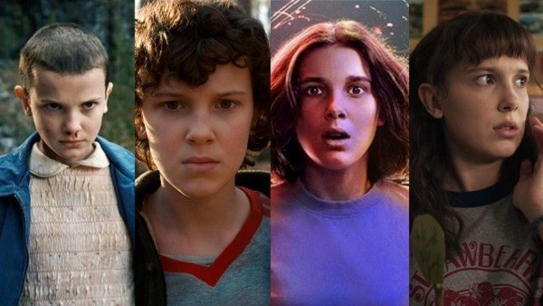
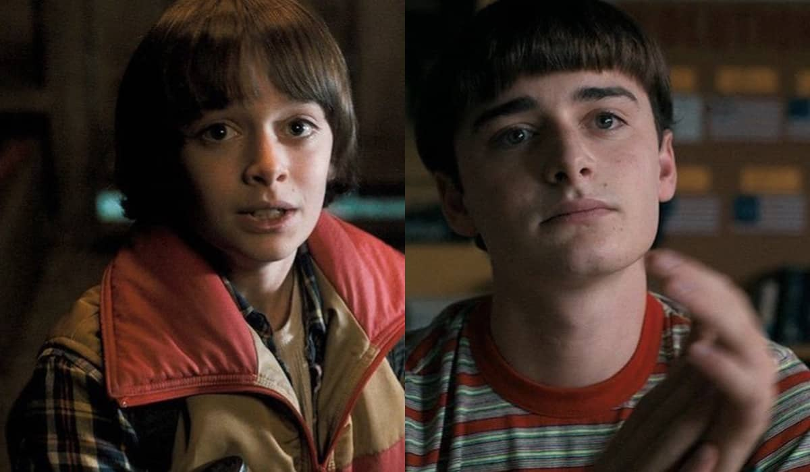
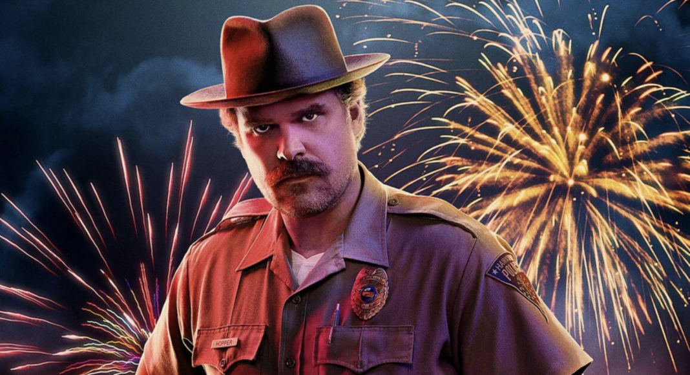

Na cidade de Hawkins, Indiana, o desaparecimento de Will Byers desencadeia uma série de eventos sobrenaturais e mistérios que desafiam a realidade. Seus amigos e familiares enfrentam forças desconhecidas, criaturas do Mundo Invertido e segredos sombrios do governo. A cada descoberta, eles percebem que proteger a cidade e salvar Will exigirá coragem, união e muito mais do que esperavam.

Garota com poderes telecinéticos que escapa de um laboratório secreto e se torna amiga dos jovens de Hawkins.

O garoto que desaparece misteriosamente, iniciando a série de eventos sobrenaturais na cidade.

O xerife de Hawkins, que investiga os acontecimentos estranhos e protege os jovens da cidade.